서울대학교 데이터사이언스대학원 정형수 교수님의 "데이터사이언스 응용을 위한 빅데이터 및 지식 관리 시스템" 강의를 필기한 내용입니다.
Timestamp Ordering (TO)
- Timestamp Ordering (TO) 은 대표적인 optimistic concurrency control 이다.
- 2PL 에서의 문제점은
- 일단 lock manager 의 bottleneck 이 너무 심하다는 것
- Conflict 시에 한 txn 이 block 되어버린다는 것이다.
- 근데 conflict 는 rare case 이기 때문에 이것을 위한 overhead 를 가져가는 것은 비효율적이다.
- 또한 short-lived txn 들이 많이 생겨서 lock acquire 하면 더욱이 lock manager 에의 contention 이 심해진다.
- 따라서 TO 에서는
- Lock 을 사용하지 않고,
- Conflict 시에 block 하는 것으로 serialization order 를 지키는 것이 아닌 serialization order 위배되는 놈을 발견했을 때 abort & retry 하는 방식을 사용한다.
- TO 에서의 serialization order 는 timestamp () 을 이용해 결정된다.
- 여기서 timestamp 는 다양하게 구현될 수 있는데, 보통은 global counter 를 사용한다.
- 즉, 만약 두 txn 와 에 대해 > 이라면, 순서로 serial 하게 실행되는 것과 동일한 효력을 (equivalent) 갖도록 해야 하고, 만일 위배된다면 abort & retry 하는 것.
Basic TO
- 일단 txn 은 생성되면 timestamp 를 발급받는다 ().
- 모든 object 에 대해, 두가지의 정보가 추가로 유지한다:
- : 를 write 한 가장 최신의 txn 의 timestamp (max. ts).
- : 를 read 한 가장 최신의 txn 의 timestamp (max. ts).
- 그리고 를 읽으려고 하는 모든 txn 은 자신의 와 , 를 비교한다.
- 여기서의 핵심은 아이디어는 “미래의 값을 읽을 수는 없다” 이다: 만약 내 가 의 보다 작다면, 미래의 데이터이기 때문에 읽지 못하는 것.
- Read 할 때는:
- 만약 < 라면, 미래의 데이터를 읽은 것이므로 abort 하고 새로운 로 다시 시작한다.
- 만약 그렇지 않다면, 를 로 업데이트하고, repeatable read 를 위해 X 를 local copy 하여 처리한다.
- Write 할 때는:
- 만약 라면, 미래의 누군가가 이것을 읽고있다는 의미이다.
- 따라서 나는 과거를 바꾸는 것이므로 abort 된다.
- 라면, 미래의 누군가가 이것을 write 했다는 의미이다.
- 따라서 마찬가지로 내가 과거에 있는 것이고, 과거의 값으로 overwrite 하는 꼴이므로 abort 된다.
- 그렇지 않다면, 를 로 업데이트하고 마찬가지로 repeatable read 를 위해 local copy 한다.
- 만약 라면, 미래의 누군가가 이것을 읽고있다는 의미이다.
Example
- 아래의 그림이 이전의 상황이다:
- 이 를 read 해서 는 1, 이 를 write 해서 는 2 가 되었다.
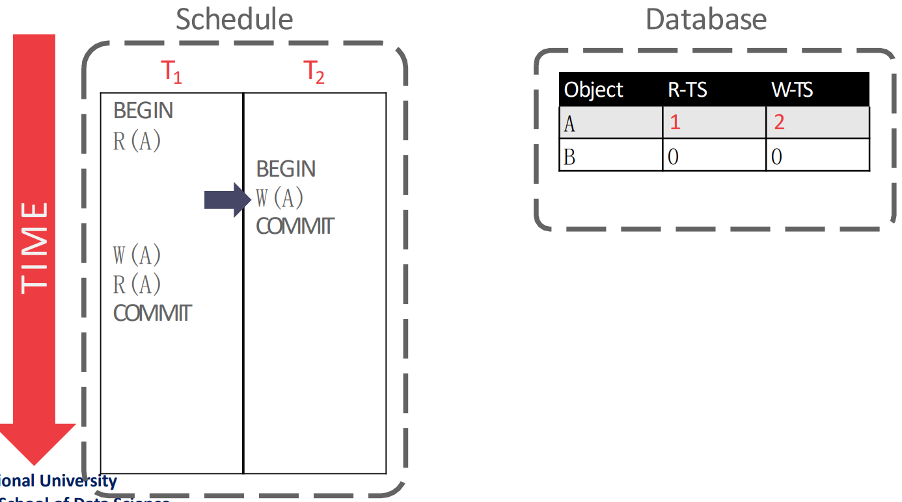
- 그리고 다음 를 실행할때는 violation 이 발생한다:
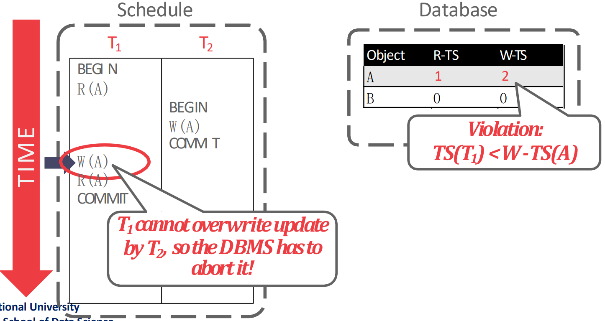
- 왜냐면 가 2 이고 은 1이기 때문에 내가 여기다가 write 를 하게 되면 과거가 미래를 overwrite 하는 꼴이기 때문.
Long-Lived Transaction (LLT) Consideration
- LLT 의 경우에는 상대적인 TS 가 점점 작아지기 때문에 계속 abort 된다
- 위 로직 보면 TS 가 작으면 abort 되자나?
- 근데 LLT 의 경우에 내가 오래 살아있게 되면 다른 신선한 놈이 계속 생기면서 내가 우선순위가 밀리게 되는 것
- 이러면 LLT 는 일을 많이 하는 놈인데 일을 많이 하는 놈이 계속 abort 되기에 penalty 가 꽤 크다고 할 수 있다
- 즉, vulnarability window 가 커지게 되고 starving 이 발생한다.
Modern Optimistic Concurrency Control
- Basic TO 에서의 문제점은 를 너무 일찍 발급받는다는 것이었다.
- Modern Optimistic Concurrency Control (OCC) 의 아이디어는
COMMIT직전에 를 발급받자는 것이다. - 그래서 이놈은 크게 3개의 phase 로 나뉜다.
- Read Phase: 여기서는 operation 을 쭉 실행하되, read 할때는 local workspace 로 가져오고 write 할 때는 local workspace 로 가져와서 변경한다.
- 이렇게 local copy 를 유지하는 것은 repeatable read 를 위해서도 있지만, 여기 담긴 object 들이 곧 access history 이기 때문에 뒤이은 validation phase 에서 다른 txn 들의 access history 를 참고하며 validation 할 수 있도록 해준다.
- Validation Phase: 여기에서 를 발급받고, Basic TO 에서와 같은 원칙으로 violation 이 발생했는지 확인한다.
- Write Phase: Local workspace 에 write 한 값들을 global database 에 적용 (install) 한다.
- Read Phase: 여기서는 operation 을 쭉 실행하되, read 할때는 local workspace 로 가져오고 write 할 때는 local workspace 로 가져와서 변경한다.
- 뭐 최근 (5년) 논문에서는 validate 순대로 TS 를 발급하지 않고 time window 를 둬서 이 안에서 validate 를 하는 txn 들에 대해서는 유동적으로 TS 를 발급해 아무도 abort 되지 않게 하는 논문이 나왔댄다.
Simple Read-Validate-Write Phase Example
- 다음의 예시를 보자.
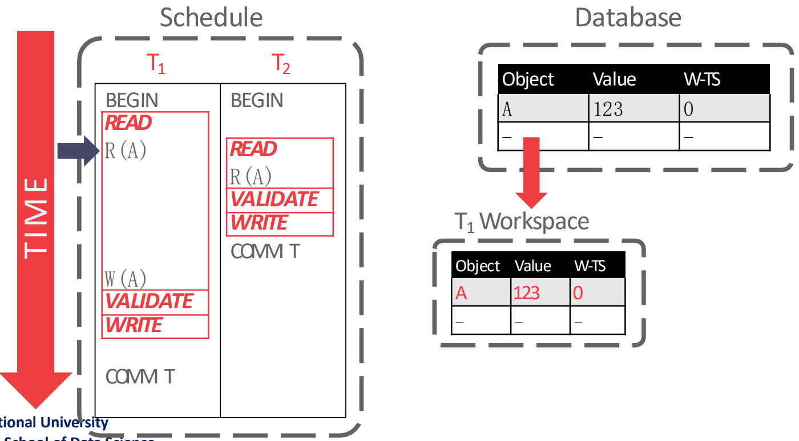
- 우선 read phase 부터 시작하는데,
- 을 실행할 때는 의 workspace 에 의 값인 123 와 를 복사해 온다.
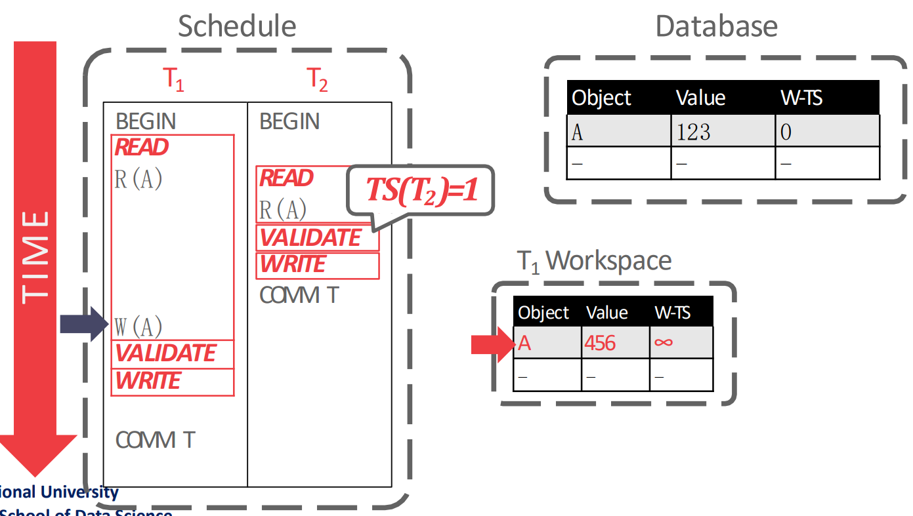
- 그리고 을 실행할 때는 의 workspace 에서 의 값을 456 으로 바꾼다.
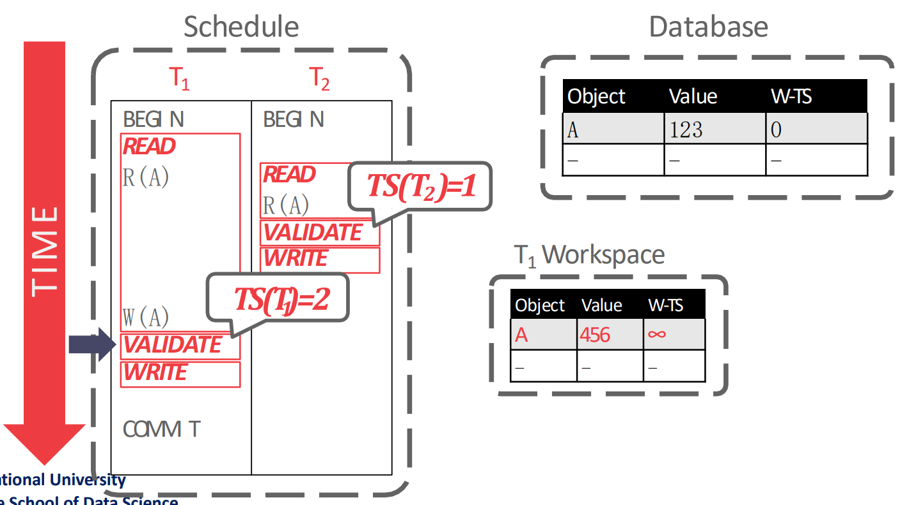
- 다음 validation phase 에서 를 발급받은 뒤에, validation 을 한다.
- 여기서 validation 을 어떻게 하는지는 뒤에서 설명할거임
- 눈여겨볼 것은 validation phase 순서로 가 발급되기 때문에, 이고 가 된다는 점이다.
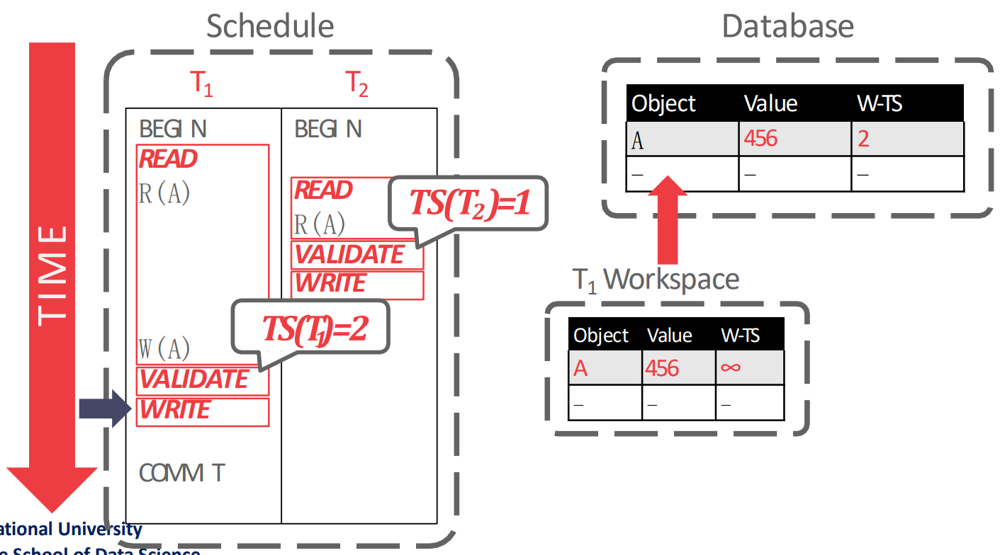
- 그리고 마지막으로 write phase 에서 local workspace 에 있던 것을 global database 에 install 하며 종료된다.
Validation Types
- Validation 은 어떤 txn 과 비교를 할 것이냐에 따라 Backward 와 Forward 로 나뉜다.
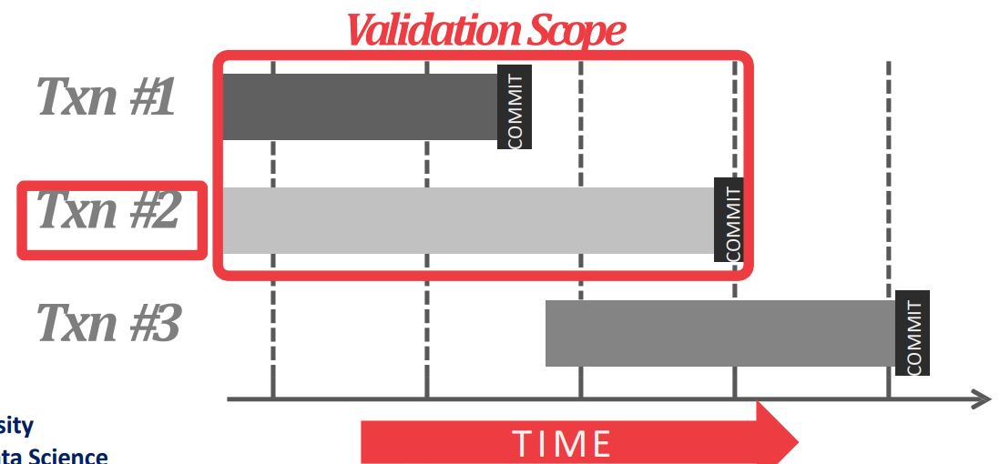
- Backward Validation 은 validation 시점 기준 이미
COMMIT된 다른 txn 들을 이용해 validation 을 하는 것이다.
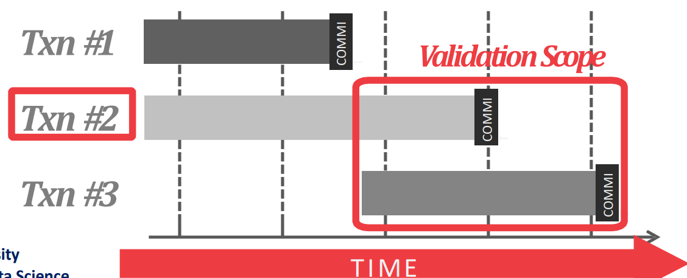
- Forward Validation 은 validation 시점 기준 같이 실행중인 (즉,
COMMIT되지 않은) txn 들을 이용해 validation 을 하는 것이다.- 요즘은 이놈을 많이 쓴다. 따라서 이놈에 대해 좀 더 알아보자.
Forward Validation
- 라면, 다음의 세 조건 중 하나를 만족해야 한다.
- 가
BEGIN한 시점에, 가 read-validate-write phase 를 전부 완료하거나 - 가 write phase 를 시작하기 전에, 가 read-validate phase 는 끝냈고 의 write set 과 의 read set 간의 교집합이 없어야 한다.
- 가 validate 하는 시점에, 는 read phase 가 끝나지 않았고, 그리고 의 write set 과 의 해당 시점에의 read, write set 과의 교집합이 없어야 한다.
- 가
- (2) 와 (3) 은 사실상 같은 얘기인 것 같은데, 아마도 다음과 같은 관점인 것 같다.
- 은 내가
BEGIN하기도 전에 모든 phase 가 끝난 다른 txn 과의 비교를 하는 상황이고 - 은 내가 validate 하는 시점에 validate phase 까지는 끝난 다른 txn 과의 비교를 하는 상황이고
- 은 내가 validate 하는 시점에 아직 read phase 인 다른 txn 과의 비교를 하는 상황이다.
- 은 내가
- 결국에는 가 낮은 놈의 write set 과 높은 놈의 read set 이 겹치면 안된다는 것으로만 판단해도 된다.
Example 1
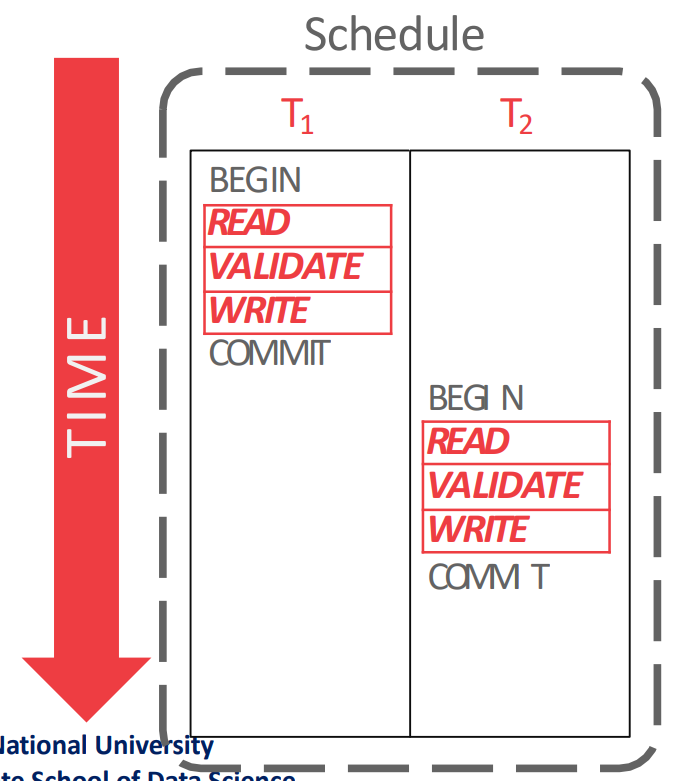
- 근데 사실 이 그림은 틀린 것이다. 왜냐면 가 validate 하는 시점에는 은 이미 commit 되었기 떄문에 validation 대상이 아니기 때문.
- 만약 이 그림에서 이
COMMIT만 나중에 했다면 올바른 예시이니라.
- 만약 이 그림에서 이
- 어쨋든 가
BEGIN할 때에는 은 이미 세 phase 를 모두 종료했기 때문에 가 보는 내용은 전부 가 global database 에 적용한 내용일 것이고, 따라서 문제가 없다 (1번 조건).
Example 2
- 다음과 같은 상황을 생각해 보자.
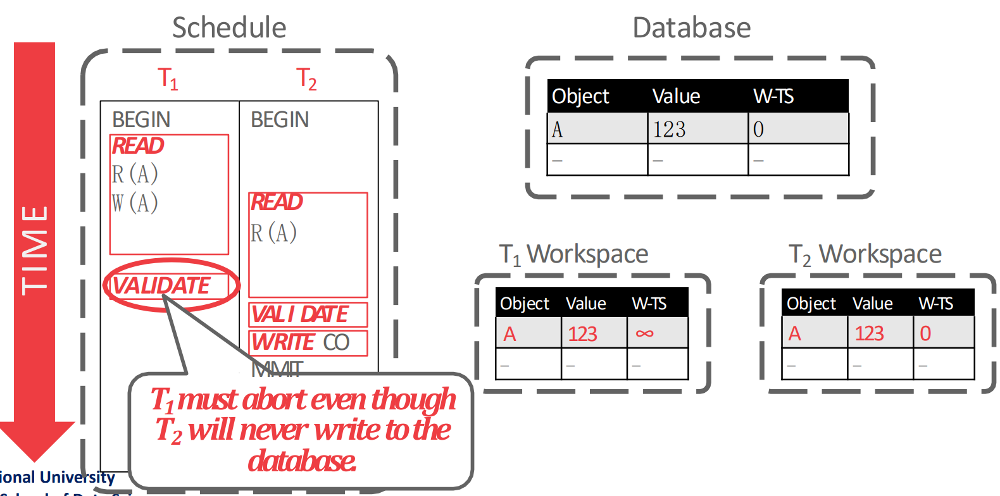
- 입장에서 보면 내가 validate 하고 있는데 는 아직 read phase 이고, 나의 write set 인 이 의 read set 과 겹치기 때문에 는 validation 에 실패한다 (조건 3).
Example 3
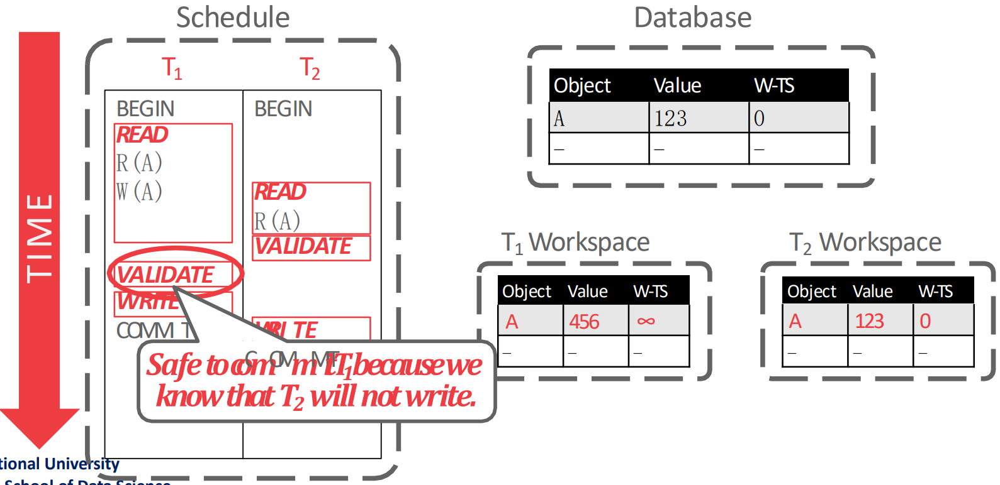
- 가 validate 할 때는 는 이미 validate 가 끝난 상황이고 의 write set 인 과 의 read set 인 가 겹치지 않기 떄문에 은 validation 에 성공한다.
Example 4
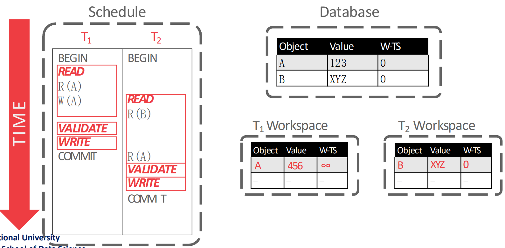
- 이 validation 할 때는 의 write set 은 이고, 의 read set 은 이다.
- 이것은 오른쪽의 workspace 에도 표시되어 있다. 가 추후에 를 read 하긴 하지만, 가 validate 하는 시점에서는 아니기 떄문.
- 따라서 이때의 의 validation 은 통과한다.
Drawbacks
- OCC 는 conflict 가 없다면 물론 빠르지만 skewed access 의 경우에는 PCC 보다 느려질 수 있다.
- 또한 OCC 에서는 각 txn 들이 local copy 를 두기 때문에 메모리를 많이 먹고 OLAP 에서는 별로일 수 있다고 한다.
- 다만 in-memory DB 에서는 어차피 memory 가 차고넘치니까 사용하기도 한다.
- 그리고 PCC 에서는 abort 가 txn 도중에 발생하지만 OCC 는 execution (read phase) 를 다 끝내고 validation phase 에서 발생하기 때문에 abort 는 PCC 에서보다 OCC 에서 더 큰 penalty 로 다가온다.
여기부터는
2024-11-27강의
Phantom Read
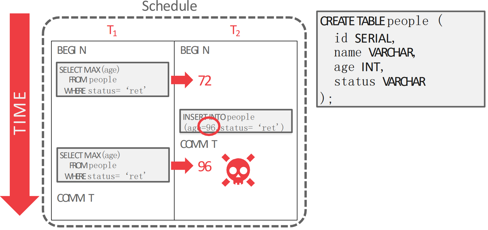
- 위 상황은 가 중간에 끼어들어서 새로운 96 이라는 값을
INSERT해서 에서의MAXaggregation 의 값이 72 에서 96 으로 바뀐 모습이다. - 이건 당연히 serializable 하지 않다. 두개를 각각 실행시켰다면 이런일이 없기 때문.
- 이와 같은 문제를 Phantom Read 라고 한다: 중간에
INSERTtxn 이 끼어들어와 아까는 안보였던 것이 보이는 현상을 말한다.- 뭔가 Unrepeatable read 와 비슷해 보이는데, 이거와는 근본적인 차이가 있다:
- Unrepeatable read 에서는
UPDATEtxn 이었고, Phantom read 에서는INSERTtxn 이라는 것. - 즉, “새로운 record” 라는 점이라는 것이 중요하다.
UPDATEtxn 을 고려하는 기존의 PCC 나 OCC 로는 이 문제를 잡을 수 없다.- PCC 에서는 기존에 있던애들만 lock 을 잡기 때문에 새로 추가되는 것을 막을 방법이 없고
- OCC 에서 workspace 을 비교해도 “새로운 record” 이기 때문에 두 txn 은 교집합이 없어 validation 에 통과한다.
- 이 문제가 발생하는 근본적인 원인은 “Predicate 으로 가져온 record 가 두 operation 에서 서로 다르기 때문” 이다.
Re-execute Scans
- 제일 멍청한 방법이다. DBMS 가 모든 query 의
WHEREclause 를 추적해 각 query 가 어디를 range scan 하는지를 알아낸 뒤COMMIT할때 이부분을 다시 scan 해보고 결과가 같은지 보는 것이다. - 당연히 안쓴다.
Predicate Locking
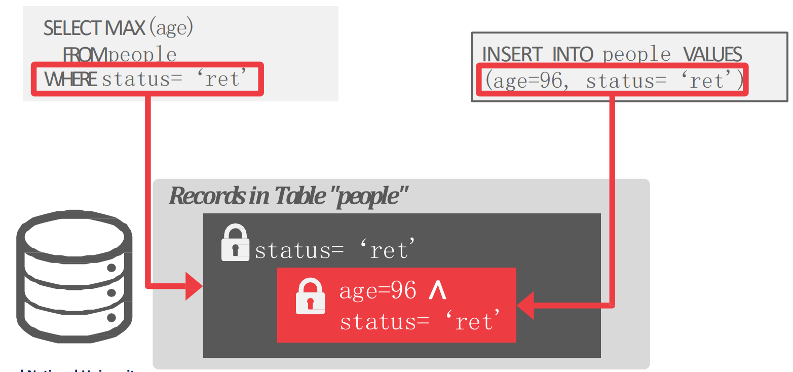
- 이것을 해결하기 위해 IBM System R 에서는 Predicate Lock 이라는 것을 도입했다.
- 위 그림에서 보는것 처럼 “Predicate” 에 대해 lock 을 걸고,
INSERTquery 에 대해 해당 predicate 을 만족하는지 검사하는 방식이다.
- 위 그림에서 보는것 처럼 “Predicate” 에 대해 lock 을 걸고,
- 근데 문제가 좀 있었다.
- Predicate 별로 추가적인 lock 이 사용되어야 하고
INSERT할때도 각 predicate lock 에 부합하나를 모두 검사해야하는 overhead 가 있다.
- 즉, practical 하지 않아서 요즘은 거의 안쓴다고 한다.
- 지금 predicate lock 을 지원하는 것은 GIS 처럼 지리 정보에 대해 좌표 범위 안에 들어오냐 안들어오냐 정도로만 구현되어 사용된다.
Index Locking
- 이것은 사용하고 있는 index 및 data page 를 locking 해서 phantom read 를 방지하는 방법이다.
- Predicate column 에 대한 index 가 있다면 해당 index 를 통해 접근되는 data page 들을 locking 한다.
- 만약 index 는 없는데 data page 가 없다면 (empty) index page 를 locking 한다.
- 만약 index 가 없다면, table 을 이루고 있는 모든 page 와 table 자체 (이것은 새로운 page 가 추가되는 것을 막기 위해) 에 대해 lock 을 건다.
- Predicate column 에 대한 index 가 있다면 해당 index 를 통해 접근되는 data page 들을 locking 한다.
Gap Locking
- 이게 phantom 을 해결하기 위해 사용하는 방법이다.
- Phantom read 에서 발생하는 문제를 쪼개보면 결국에는 다른 누군가가 읽고있는 record 두개 사이에 내 record 를 추가하는게 문제였다.
- 그래서 이 두 record 사이에 대해 lock 을 걸어버리면 여기에 추가될 수 없으므로 phantom read 문제를 피할 수 있다.
- 따라서 lock type 에
next_key(혹은gap) 라는 것을 추가해서 “구간” 에 대한 lock 을 할 수 있도록 지원한다.- 이 “구간” 은 interval 이라고 부르고
next_key는 현재와 다음것 사이의 interval 에 대한 lock 이고gap은 현재와 이전것 interval 에 대한 lock 이다.- 즉, 이 둘은 같은 것
- OCC 에서는 이 interval 을 workset 에 넣어서 비슷한 효과를 내게 한다.
Isolation Level
- Isolation level 이 높아지면 안전하긴 하지만 concurrency 가 적어진다는 trade-off 가 있다.
- 따라서 이놈은 많은 DBMS 에서 configurable 하다.
- 이건
SET TRANSACTION ISOLATION LEVELSQL 로 설정 가능하다.
- 이건
- 일단 다음과 같은 isolation level 이 있고:
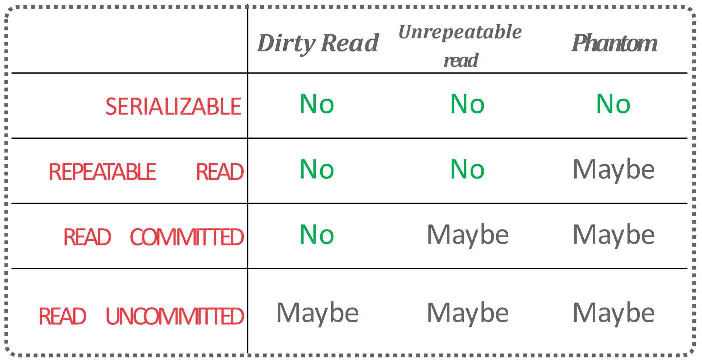
- 다음과 같은 locking strategy 를 사용하며:
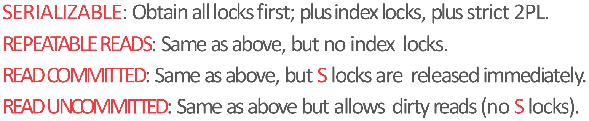
- DBMS 별로 default 값과 최대 isolation level 은 다음과 같다고 한다:
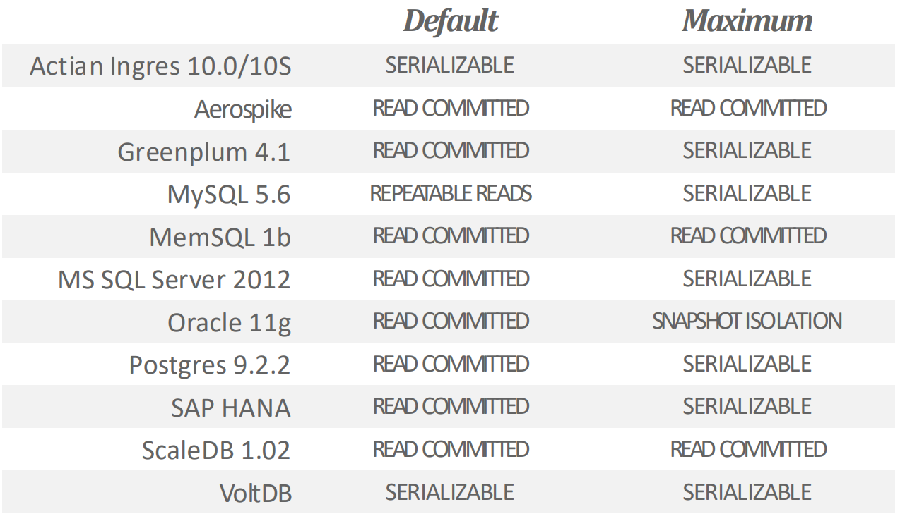